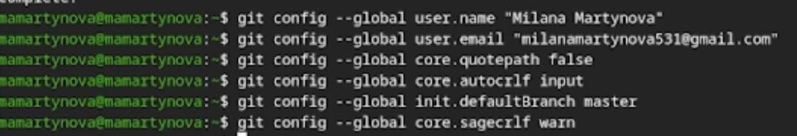
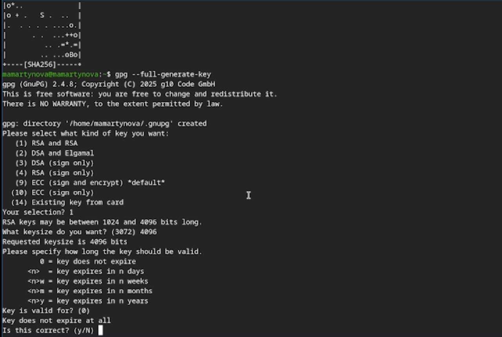
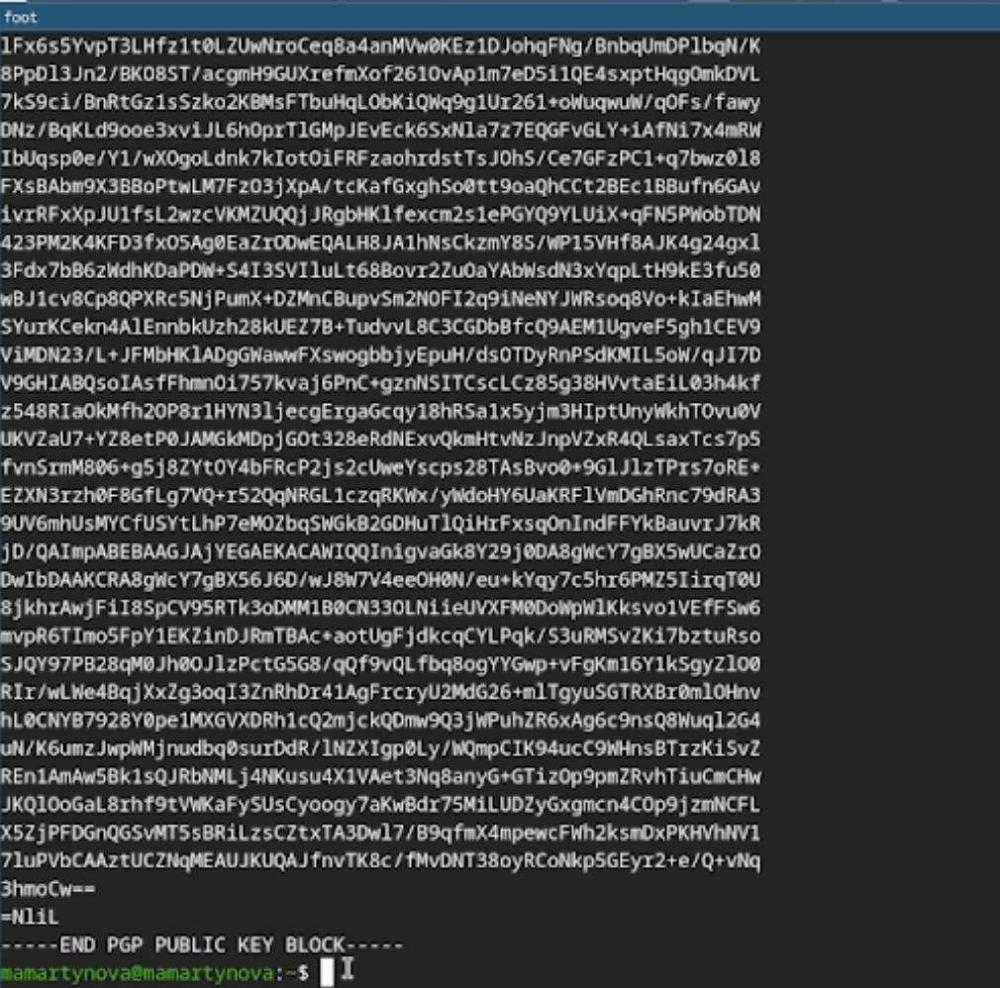
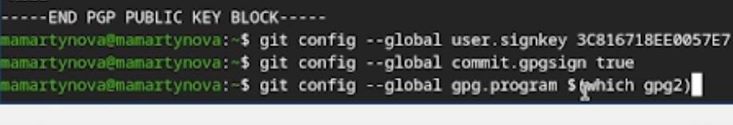
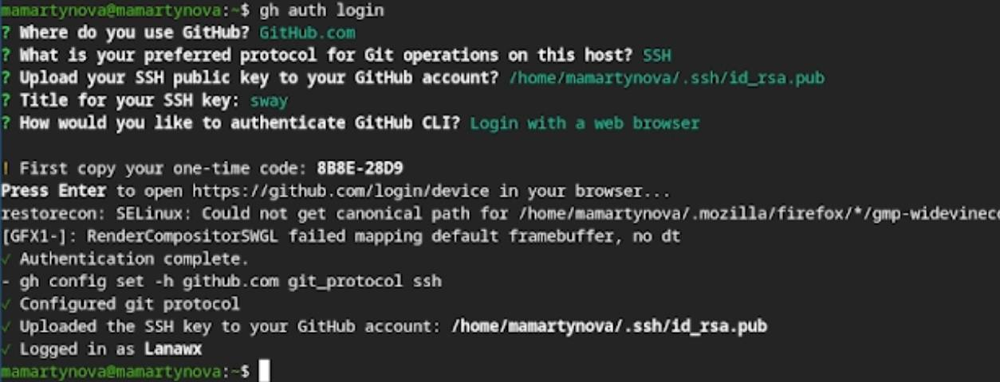
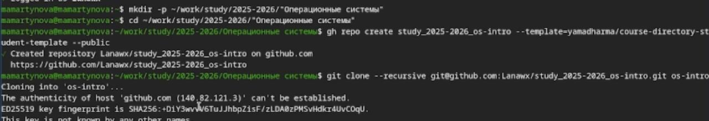
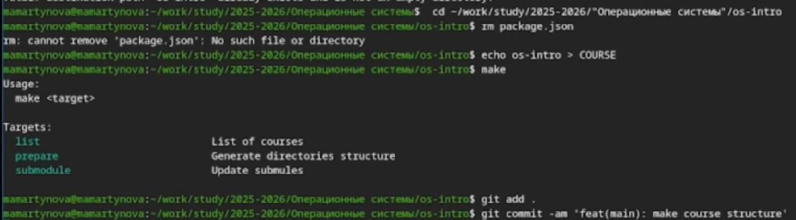

Цель работы заключается в теоретическом изучении концепций систем контроля версий и формировании практических навыков эффективного использования инструментария Git.
Системы контроля версий (VCS) используются для совместной работы над проектами. Проект хранится в репозитории, а VCS позволяет фиксировать изменения, совмещать правки разных участников и возвращаться к более ранним версиям.
В централизованных VCS (например, CVS, Subversion) есть единый сервер-репозиторий. Пользователь получает нужную версию файлов, работает с ней и отправляет изменения обратно. Сервер хранит всю историю правок и для экономии места может применять дельта-компрессию (сохранять только изменения между версиями). VCS также отслеживают конфликты при одновременной работе с файлом и позволяют их разрешать (слияние, ручной выбор, отмена или блокировка файла). Дополнительные возможности: поддержка ветвления (несколько версий одного файла с общей историей) и детальный журнал изменений с информацией об авторе и времени правок. В распределённых системах (Git, Mercurial) центральный репозиторий не обязателен.
Сначала произвожу базовую настройку git. (рис. 1)

Далее создаю ssh и gpg ключи. (рис. 2)

Экспортирую gpg ключ для авторизации на github. (рис. 3)

Настраиваю автоматические подписи для коммитов. (рис. 4)

Авторизуюсь на github для работы через терминал. (рис. 5)

Создаю директорию курса по шаблону(рис. 6)

В конце настраиваю рабочую директорию (рис. 7)

В ходе выполнения лабораторной работы были освоены практические навыки работы с Git: создание и настройка репозиториев, генерация SSH и GPG-ключей, а также выполнение первичной настройки каталога курса и авторизация в GitHub.